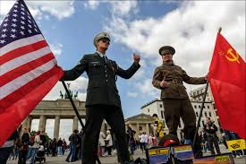

La materia de Historia, impartida por el maestro Santos Tun Julio Cesar, me ha permitido comprender mejor los acontecimientos que marcaron al mundo. En clase hemos estudiado la Guerra Fría y su impacto a nivel mundial. Aprendí que fue un conflicto ideológico y político entre Estados Unidos y la Unión Soviética. También analizamos las guerras que surgieron durante ese periodo, como conflictos indirectos entre ambas potencias. Vimos cómo estos enfrentamientos afectaron a distintos países y cambiaron el orden mundial. Además, estudiamos la Invasión de Polonia realizada por la Alemania nazi. Entendí que este hecho marcó el inicio de la Segunda Guerra Mundial. Reflexionamos sobre las consecuencias humanas, políticas y sociales de estos eventos. El maestro explica los temas con ejemplos claros y contexto histórico. En general, esta materia me ayuda a entender el pasado para comprender mejor el presente.
